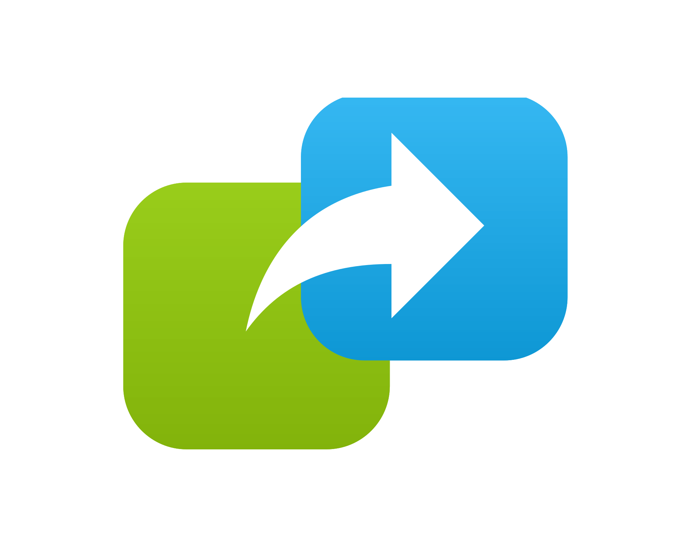

To use Utils, you must first load the plugin at the top of your script
using the LoadPlugin method like this:
app.LoadPlugin( "Utils" )
Then you can create an instance of the plugin object when you need it like this:
var utils = app.CreateUtils()
Examples:
Example - Alert
app.LoadPlugin( "Utils" );
function OnStart()
{
lay = app.CreateLayout( "Linear", "VCenter,FillXY" );
btn = app.AddButton( lay, "Press Me" );
btn.SetOnTouch( CallPlugin );
utils = app.CreateUtils();
app.AddLayout( lay );
}
function CallPlugin()
{
utils.Alert( "Alert from plugin" );
}
External Links: droidscript.org